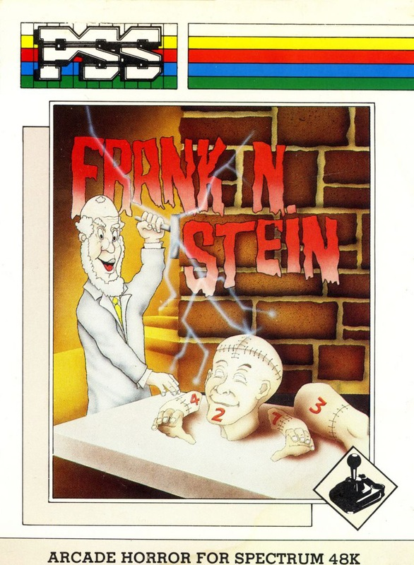
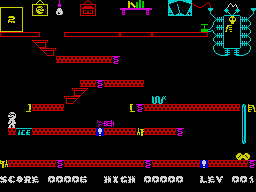
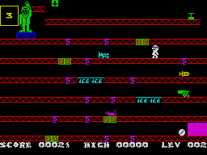
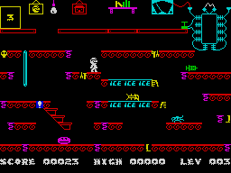

Frank N. Stein


{kind=link}

| Publisher: | P.S.S. |
| Price: | £5.95 |
| Year: | 1984 |
| Source: | CRASH, Issue 9 |
Frank N. Stein is a nuts and bolts game, a question of placing the bits in the right place in the right order. You play the part of Frank himself, a cute little white scientific personage (he’s presumably as white as a sheet having seen a ghost). In his mansion, with its various rooms, seven bits of the monster he’s busy creating are scattered about, namely the head, shoulders, arms and legs. The object is to walk about collecting them in the right order so that the monster is slowly built up again.

Frank’s mansion has rooms with several platforms in them connected by staircases and firemen’s poles. Oddly, he cannot go upwards though, except by careful and strategic use of the numerous coiled springs — well, scientists tend to cultivate a batty lifestyle.
Additionally, there are a number of hazards sloping up and down the platforms which have a nasty habit of killing poor old Frank off if he’s not careful. On top of that, being a proficient electrician, there are some very poor connections lying about which give him a quick thrill if he treads on one.
The first screen is relatively simple in layout, but progressive screens become increasingly difficult to negotiate. In between them comes a second type of screen which is reminiscent of a ‘Kong’ game. Again there are many platforms with coiled springs and hazards. The object is to reach the top and, as with all the screens, press the plunger to deactivate the monster. One extra problem with this otherwise reasonably simple arrangement is that the monster keeps dropping white balls which fall to the bottom before rolling off to the right. These, if they hit a hazard, wait for it to pass, adding an element of randomness to the timing.
CRITICISM

‘This game starts out as being above average, but as it is played you soon become more interested. It has lots of little additions (like ice patches) that make it better. After a while it soon becomes a good game. A fair amount of planning is required so that the springs are used to full advantage. The graphics, although small, are well animated. Overall, a good game.’
‘What struck me at first about this game was the cheerful and colourful graphics. Play wasn’t too difficult — just right. The monster must be assembled in a logical order which is easier said than done while avoiding hazards. This is definitely among the best of platform games for some time. Addictive and great fun to play.’

‘An excellent platform game which has neatly detailed and animated graphics, even though the sound leaves a little to be desired. The game itself is set in a creepy old house indicated by pictures hanging on the walls, lightbulbs, bookshelves and staircases. I like the idea of the ‘activate’ control instead of a jump button, which means you can do a lot more with less keys. The time limit on the assembling screens adds to the fun, and the ice patches are a nice touch, and a hazardous one at that. Very addictive and fun to play. I’m going to get this one!’
COMMENTS
| Control keys: | Z/X left/right, SPACE to ‘activate’ |
| Joystick: | Kempston, ZX 2, Protek, AGF |
| Keyboard play: | Very good layout and responsive |
| Use of colour: | Very good |
| Graphics: | Smooth, well animated and characterful |
| Sound: | Average, could have been more for effect, but nice noises |
| Skill levels: | Progressive difficulty |
| Lives: | 3 |
| Screens: | 50 |
| General rating: | A good, novel platform game that becomes very addictive in play. |
| Use of computer: | 79% |
| Graphics: | 80% |
| Playability: | 82% |
| Getting started: | 78% |
| Addictive qualities: | 83% |
| Value for money: | 78% |
| Overall: | 80% |